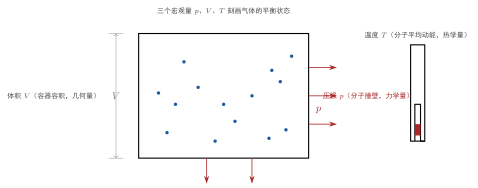

状态参量
一句话定义
状态参量是描述气体宏观平衡状态的三个物理量——压强、体积、温度，用来回答”这罐气现在处于什么状态”。
定性
先把这三个数”看见”。
想象你接手一罐密封的气体，想向别人说清楚它”现在是什么状态”。你不可能挨个去问里面那 个分子——那既做不到也没意义。你只会做三件事：看一眼壁上的压力表，得到压强；量一下容器的容积，得到体积；插一支温度计，得到温度。这三个读数一出，这罐气的状态就被人”说清”了。它们就是状态参量。
为什么刚好是这三个，而不是别的？因为这三个数各自反映了一个独立的侧面：体积回答”气体占多大地方”（几何侧面），压强回答”气体对器壁的冲击有多猛”（力学侧面），温度回答”气体有多热”（热学侧面）。三件事彼此不同，也各自可以被独立地改变——你可以只压缩体积（体积变、压强变）、只加热（温度变）、只换一个更小的容器而温度不变。所以我们用这三个独立的方向来把状态”撑”起来。
它在体系里的位置：状态参量是平衡态的”身份证”。正因为系统达到了平衡态、处处均匀，才谈得上”用三四个数就能描述整个系统”。它把宏观世界那一大片气体，压缩成三个可测的数，是热学一切公式入手的”输入变量”。
反直觉的点在于：你用来描述 个分子的，居然只是一支温度计、一块压力表。微观上多得吓人的自由度，宏观上被”压”成了三个数。这份”以少驭多”，正是热力学最省力、也最惊人的地方——它不关心每个分子，只关心全体呈现出的三个统计结果。

图：封闭容器由三个宏观量刻画——压强 p（器壁受分子碰撞）、体积 V（容器容积）、温度 T（温度计读数）。
数学表达
三个状态参量的符号、单位与量纲：
| 量 | 符号 | SI 单位 | 量纲 |
|---|---|---|---|
| 压强 | |||
| 体积 | |||
| 温度（热力学温标） |
它们不是互不相干的三个自由数。对一定量的理想气体，由物态方程联系在一起：
其中 是物质的量（摩尔数）， 是普适气体常数， 是热力学温度（开尔文）。
读这个方程的结构：三个状态参量 、、 中只有两个是独立的——给定任意两个，物态方程就把第三个定死。所以”确定一个状态”，实际只需要两个数；第三个是”被约束出来的”。这也提示：描述状态的参量数目不是随手取的，而由独立变化方向的数目决定。
对压强，其微观表达式后来会推到 ；温度则对应 。这些式子说明 、 本质上是微观分子运动的统计平均，而不是凭空定义的两根标尺。
关键性质
-
只有两个独立，第三个被物态方程约束。 三个状态参量里，、、 满足 ，所以独立的是两个，第三个跟着走。为什么？因为决定一个热力学状态的独立宏观量数目，等于系统能独立改变的”方向”数目，对一定量的理想气体是二。这是”用最少参量描述状态”的思想，多余的都是被约束的。
-
压强是分子撞壁的统计平均，不是”挤在一起的力量”。 我们直觉里说”压强大说明气多、挤得紧”，那只是直观。真正的微观图画是： 个分子永不停歇地撞向器壁，每次碰撞给器壁一次冲量，单位时间单位面积的集体作用就是压强。为什么它能稳定？因为分子数海量、撞壁次数统计稳定，平均下来就是一个确定的宏观值。
-
温度是分子平均动能的量度，不是”热多少”的量度。 温度的高低对应的是分子无规热运动的平均平动动能 ，而不是系统里”热量”的总和。为什么？两块温度相同的物质，分子平均动能相同；但散热多少还取决于质量、比热——所以”温度相同”不代表”含热相同”。这是温度与热量最深刻的区别。
-
体积是几何量，且与温度独立。 体积只反映容器空间大小，与气体本身”热不热”无关，所以它可以作为一个独立坐标。为什么这点有用？因为它让我们能在保持温度不变的同时只改体积（等温过程）、或保持体积不变只改温度（等容过程），从而把过程拆解成一个个单变量实验来研究。
推导
现在把”为什么恰好是这三个量”真正推出来——不是背诵”状态参量有三个”，而是看清这个数目是哪里来的。
先抛一个尖锐的问题：一个气体系统包含 个分子，每个分子有三个空间坐标、三个速度分量，光是位形空间的坐标就有 个维度。这海量信息，凭什么被三个数 、、 完全刻画？这里面一定有个”压缩”的机制。
设物理场景。取一孤立、已达平衡态的气体系统。我们要问：描述它的宏观状态，最少需要哪几个、哪些方向的量。
列依据。三条前提：一是系统已达平衡态，内部处处均匀——所以”微观上 维的细节差异”被均匀性抹平，系统对外只呈现整体行为；二是宏观量是大量微观量的统计平均，随机毛刺被海量平均消掉；三是分子运动无规、各向等同（等几率假定），所以没有任何一个特定方向、特定位置是特殊到需要单独记录的。
逐步演绎。把三条合起来看。因为处处均匀，我们不需要知道”左半边的温度”和”右半边的温度”——它们相等，只需要一个温度；因为随机、无方向，我们也不需要记录”分子朝上飞的动能”和”朝下飞的动能”——它们统计相同。于是海量维度的信息被平均和均匀性压扁，只剩下系统整体对外可测的宏观”出口”。而整体对外有且只有三个可独立作用的通道：一个是几何的——体积，它由容器边界决定、与气体内在无关，可独立改变；一个是力学的——压强，它是分子撞击器壁的集体表现；一个是热学的——温度，它是分子无规热运动平均动能的集体表现。三者分别对应”占多大地方""撞得多猛""热到什么程度”，恰好构成三个独立的宏观坐标。
回头看。结论不是”课本规定状态参量有三个”，而是由两条硬事实逼出来的：平衡态的均匀性把微观自由度压到只剩宏观整体，三个独立的作用通道（几何/力学/热学）决定了宏观坐标恰好是三个（其中物态方程再约束一个、实际独立两个）。你越是追问”为什么是三”，越会发现自己是被”降维”这件事本身推着走的——热力学之所以能用极少的数描述极复杂的系统，正因为它只盯着海量微观自由度被平均后剩下的那三个”整体出口”。
为什么重要
状态参量是热学世界所有方程、所有测量、所有工程计算的入口。没有它们，物态方程 无从谈起，压强公式、温度公式更是空中楼阁。它们承载了三个无可替代的职责：
- 可测：、、 都是仪表直接读出的宏观量，是理论与实验对话的”通用语言”；
- 够少：描述 个分子只需三个数，让热学能够被方程化、可计算；
- 能换算：三者靠物态方程互相牵制，测出任意两个就能推出第三个，极大地节省了测量成本——工程上常常只测最容易测的 和 ，反推 或其他状态。
工程动机很直接：管道里要算气体流量、气瓶里要判断剩余量、发动机里要预判温度压力——都靠先读到这几个参量再代方程。可以说，先有状态参量，才有热学的”数值答案”。
适用条件
状态参量并不是什么时候都有确定意义，它的成立条件就是平衡态的成立条件：
- 仅对平衡态有效。 系统须宏观均匀，否则”左侧一个 、右侧另一个 “，状态参量就失去”单一确定值”的意义。
- 仅对足够大的气体量有意义。 、 是统计平均，只有分子数海量、涨落可忽略时才稳定；若气体少到只有几个分子，平均无意义，参量也失去定义。
边界要说清：状态参量是宏观+统计的双重概念，任何一个前提（平衡、量大）不满足，、、 就只是瞬时读数而非”状态描述”。真实边界：高速流动、激波、急剧膨胀这类非平衡场景下，、 在空间上不是常数，需要用场量（、）而不是单一状态参量描述。
边界与误区
状态参量看似简单，但三个根深蒂固的直觉误区值得挖一挖。
-
误区一：把压强当作”分子挤在一起的力量”。 根因：总觉得”压强=气多、气紧、撑得开”，把它想成一种”挤”的静态力。正确区别：压强本质是分子不停撞壁的统计结果，是大量碰撞冲量在单位时间单位面积上的平均。它依赖于分子的运动和碰撞，不是一种”积压的力”。
-
误区二：把温度当成”热量多少”或”含热多少”。 根因：日常说”这个热""那个凉”，把温度和”热”划了等号。正确区别：温度是分子平均动能的量度，热量是能量传递的量。两个物体温度相同，平均动能相同，但一个质量大的散热时放出热量更多——温度相同不代表含热相同。
-
误区三：以为三个参量彼此完全独立。 根因：觉得”三个数嘛，爱怎么定怎么定”。正确区别：、、 被物态方程死死捆在一起，只有两个独立。你若随手给定三个互不满足方程的数值，它根本不对应任何真实状态。要描述状态，给两个、算第三个，才是对的。
对照
最容易和状态参量混的是微观量——单个分子的速度、动能、动量。两者的分界，用一个关键差异就能说清：
状态参量是”可测的平均”，微观量是”测不到的个体”。
状态参量（、、）是海量分子的统计平均，是一支温度计就能读出来的宏观数，直接可测量；微观量（某个分子的 、）是单个分子的瞬态个体量，不可直接测量（你无法同时测出某个特定分子的速度和位置），而且每时每刻都在变。想描述整体状态，就必须抛开个体、用统计平均的状态参量；想理解本质，就得钻进个体、用微观量。二者是”整体与个体""平均与瞬时""可测与不可测”的互补两面。
例子
我们把三个参量实际算一遍，看它们如何互相牵制。
设 理想气体，温度 ，压强 。用物态方程求体积：
也就是说，一摩尔气体在室温标准大气压下约占 24.6 升——大约是一个十八升水桶再稍大一点的容积。这个数值告诉我们：三个参量中只要给出 和 ，第三个 立刻被”算”出来，不需要去量。
现在反着设计一个工程场景。一个容积固定的密闭气罐，体积 恒为 ，初始时罐内气体 、。把它加热到 （温度翻倍）。因为 和 都不变，物态方程给出 ——压强也翻倍。这解释了为何密闭容器加热会胀破：温度升高使分子平均动能增大、撞壁更猛，压强直线上升。反推工程含义：气罐、轮胎、锅炉这类体积不变的容器，最怕的就是温度飙升——你只需盯住温度，就知道压强会按比例猛增，从而预留安全裕量、设计泄压阀。